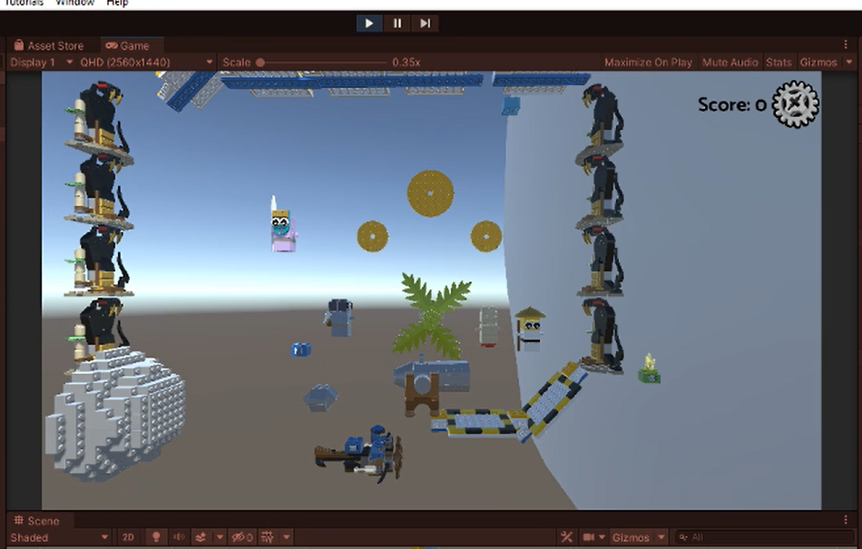
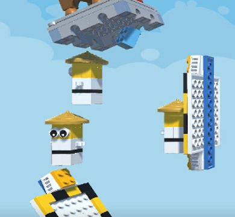
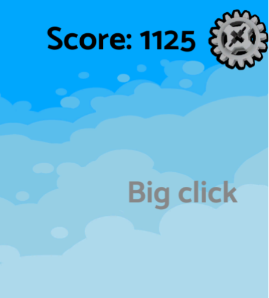
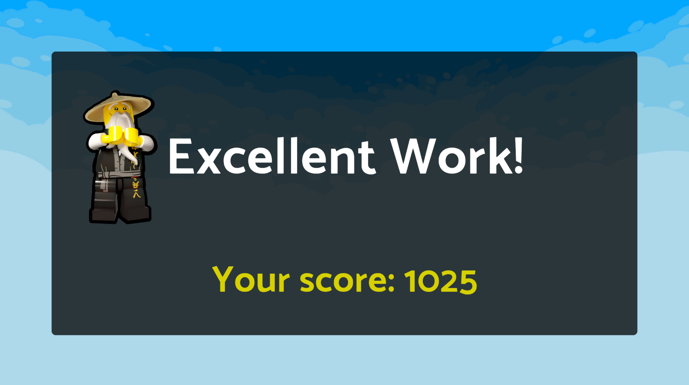
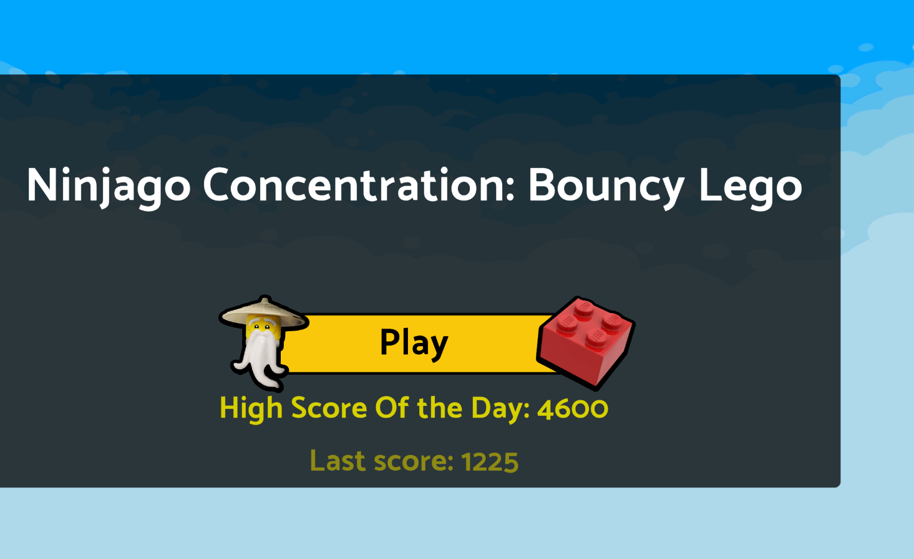
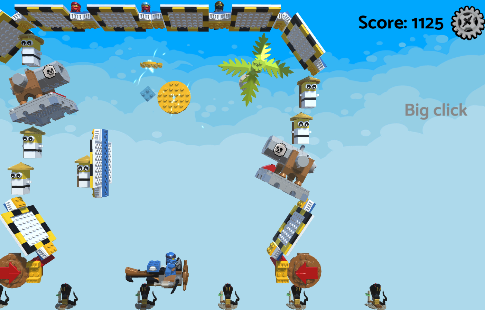

Ninjago Concentration Bouncy Lego
>
Don't let the ball drop and try to beat your own high score of the day! Master Wu will be encouraging you along the way. Your ninja companions are watching you from above. If you hit the following, you will get the following points: Small rotator:100 points Large rotator:125 points, Master Wu: 500 points, Swallowed by cannon: 875 points. Be careful: Each objects bounciness is different which causes your lego to bounce with the different forces. Even the cannon has been tinkered by your enemies, so it may not always shoot the lego piece the way you expect...so Concentrate! Hold the spacebar to move. Release the spacebar to stop moving. Everytime you press the spacebar you alternate direction.WebGLC#Unity, Unity's Lego TemplateOct 2021Unity 2021 Lego Ninjago One Button Game Challenge.I first had to think of a game that I would thoroughly enjoy making using "one button". I remember loving the retro game silver ball so I wanted to make something similar where I prevent a ball from falling down.I prototyped what my environment may look like because I wanted to get a sense of how a lego can bounce off of the lego assets. Below is one of my earlier prototypes

I wanted to simulate a functionality in the retro game where the silver ball gets sucked into a hole and comes out of another hole. I replaced the hole with a cannonI also wanted objects for the lego ball to bounce off of, but I wanted these items to be "fun" and have sound effects such as Master Wu saying "Woo!" when he gets collided with. Depending on which item it was bounced off of, it would have a different score. I used an abstract class so that I have similar properties such as score, sound and text. Then I would have child classes such as MasterWuCollidable and RotatorCollidable

I would have a gamemanager to display the score and display some fun text based on which object the lego ball collided with. These text are in the abstract parent class where the collidables inherit.

Once all the functionality was done, I made sure to include a end menu that would display the score

And a high score menu so the user would want to continue playing to beat the high score

The final result of the game looks like this.
